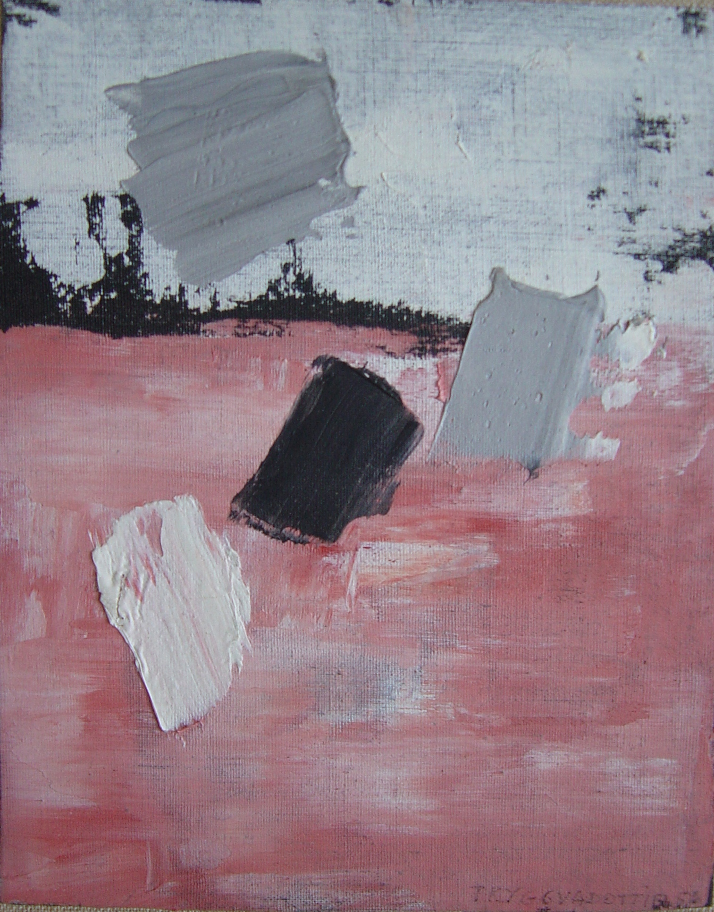

Nina Tryggvadottir
1913 – 1968
Artist Biography
Nína Tryggvadóttir was born in Seyoisfjorour, Iceland and became one of Iceland's most important abstract expressionist artists. Mainly working in painting she also did paper collage, stained glass work, mosaic and more. She frequently based her compositions on nature where the Icelandic landscape and Nordic light played an important role. Tryggvadóttir studied art at the Royal Academy of Art in Copenhagen from 1935 to 1939 when she moved to Paris. In 1942 she left for New York to study at the Art Students League of New York. There she took an active part in the city’s art scene. She married the artist Alfred L. Copley in 1949 but was prevented from returning to the US after a visit to Iceland because she was suspected of being a Communist sympathizer. During her exile from the USA she lived in various places in Europe. Copley joined her in Paris where they lived for a few years together with their daughter, born 1951. During those years Tryggvadóttir kept on making and practicing her art, exhibiting in many places – including a 1958 solo show at the ICA, London called “Collages” - and travelling through Europe. They returned to New York in 1959. During all her years abroad Tryggvadottir kept on exhibiting in Iceland and elsewhere in Europe where her work was better known that in the United States. An important but previously neglected female abstract expressionist artist, Tryggvadottir is beginning to receive serious recognition; David Findlay Jr Gallery in New York held a solo show in 2014, whilst the National Gallery of Iceland is holding a retrospective from September to December 2015.

Untitled, 1956